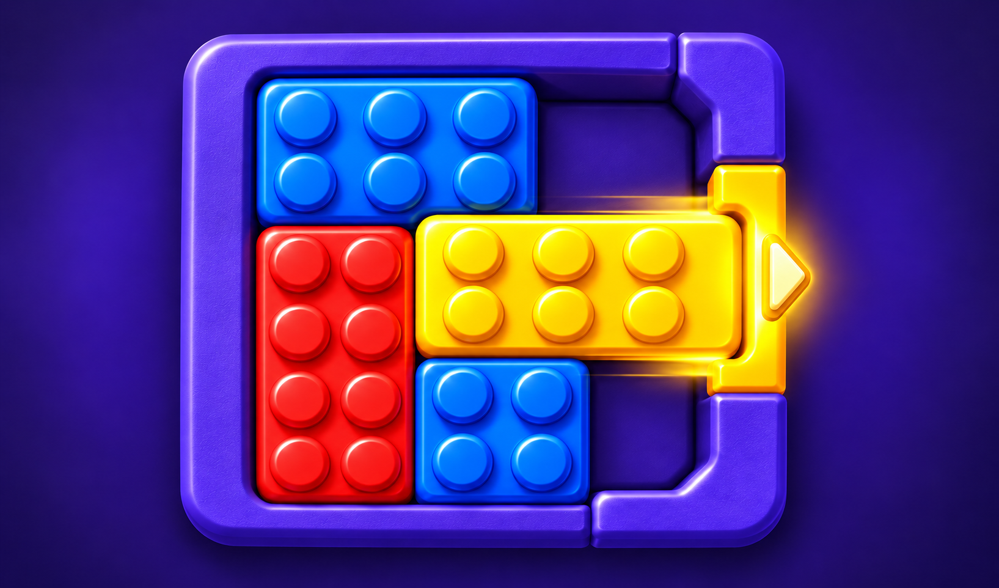

Block Gateway
Slide colored blocks to matching exits before time runs out.

About the game
Block Gateway is a sliding-block puzzle built around colored exits. Move the shapes across the board and lead each one to a gate of the same color before the timer runs out. A matching color is only part of the solution: the opening also needs to fit the block’s entire leading edge.
Other blocks and walls limit each move, so the order matters. Shift one shape to make room for another, line it up with an exit and clear the route step by step. Shapes slide without rotating, and blocks marked for one axis move only along that direction.
Clear every block required by the level to finish. Look at the available space and the gates before choosing your next drag.
How to play
- 1.
- Press a block and drag it horizontally or vertically.
- 2.
- Move other shapes out of the way; blocks cannot pass through walls.
- 3.
- Line up the block with a gate of the same color that fits its leading edge, then drag it out.
- 4.
- Clear every block required by the level before time runs out.